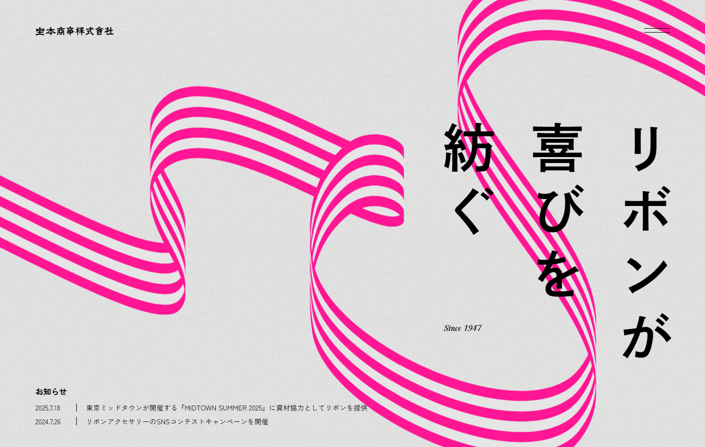
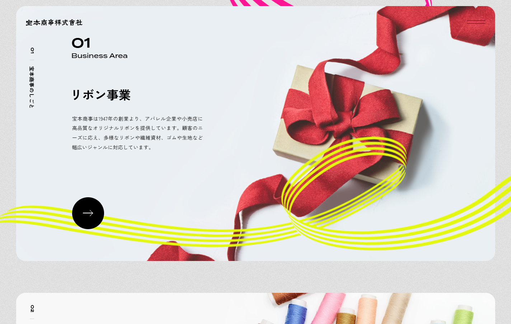
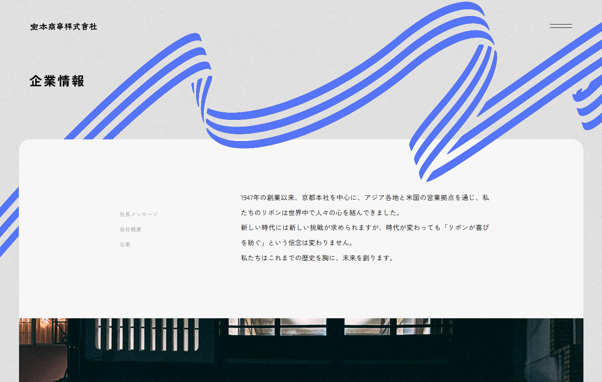
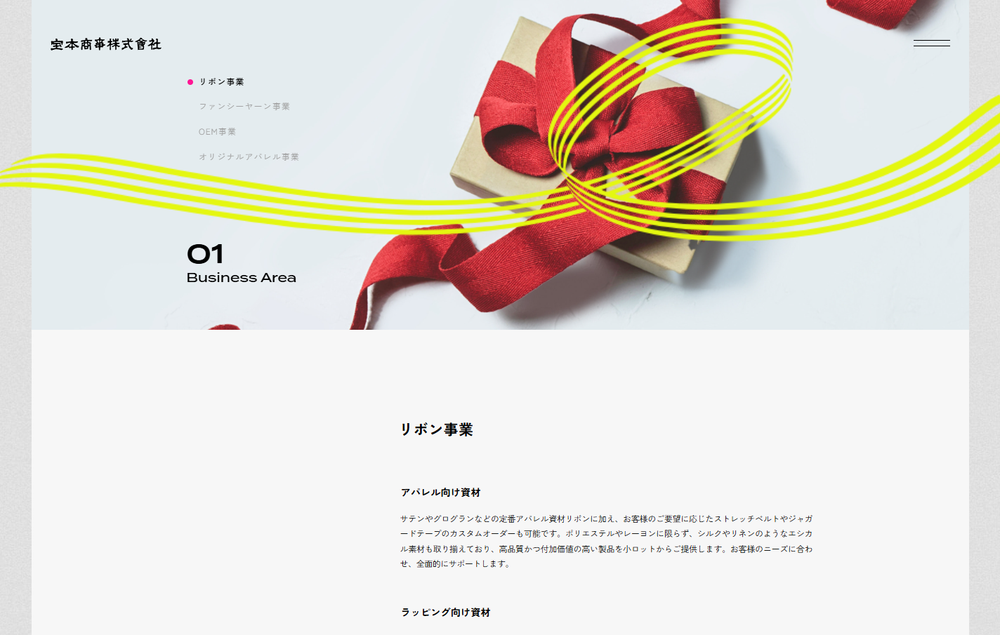

宝本商事株式会社
宝本商事
2024
概要
1947年創業の宝本商事は、リボンの企画製造卸を中心に、多彩な事業を国内外で展開するグローバルカンパニーです。長年積み重ねてきたリボン事業と、未来を切り拓く新規事業の双方が共存する中で、それぞれのフェーズに合わせた課題整理と価値の再定義が求められていました。
シンタケダは、社長自らが海外スタッフを含む全社員の声に耳を傾ける対話のプロセスをサポート。山積する経営課題を一つひとつ紐解きながら、並行して進む新規事業にも関わりました。徹底したヒアリングを通じて、組織が持つ本質的な価値と、進むべき未来の解像度を高める伴走支援を行っています。
スタッフとの対話から紡ぎ出された「会社の価値」を社内外へ正しく届けるため、コーポレートサイトの全面リニューアルを実施。ウェブサイト全体の設計はもちろん、コピーライティングもゼロから担当し、伝統と革新が共存する同社のアイデンティティを言葉として定着させることで、組織の「人格」を体現する新たな情報発信の基盤を構築しました。
取り組みコーポレートサイト
1947年の創業以来培ってきたリボン事業と、未来を見据えた複数の新規事業。その伝統と革新が共存する同社のアイデンティティを再定義するため、ウェブサイトのリニューアルを実施。「リボンが喜びを紡ぐ」というフィロソフィーをはじめ、サイト全編のコピーライティングも担当しました。単なる情報の羅列ではなく、組織の「人格」や「進むべき未来」を社内外へ一貫して伝えるためのコミュニケーション基盤として構築しています。



